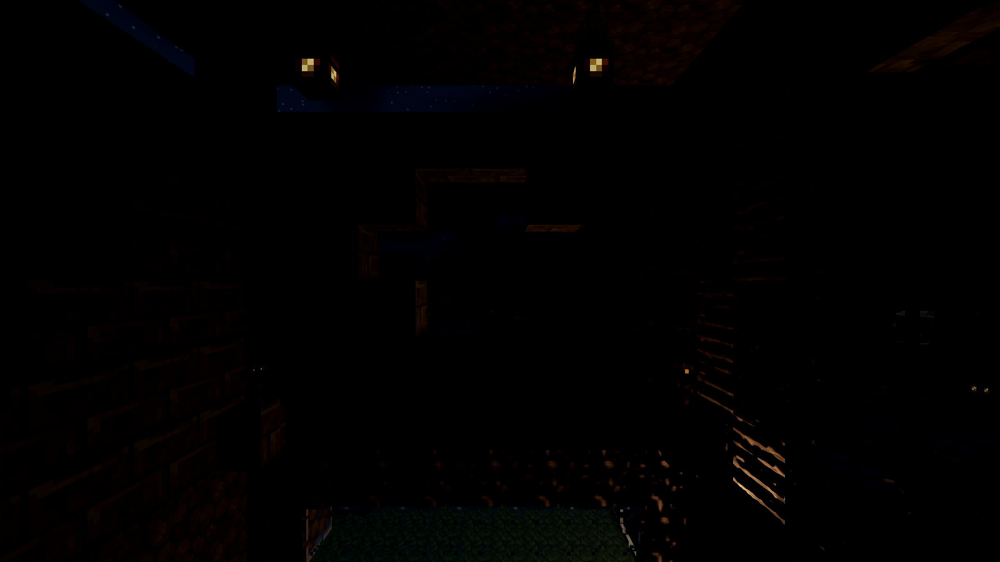
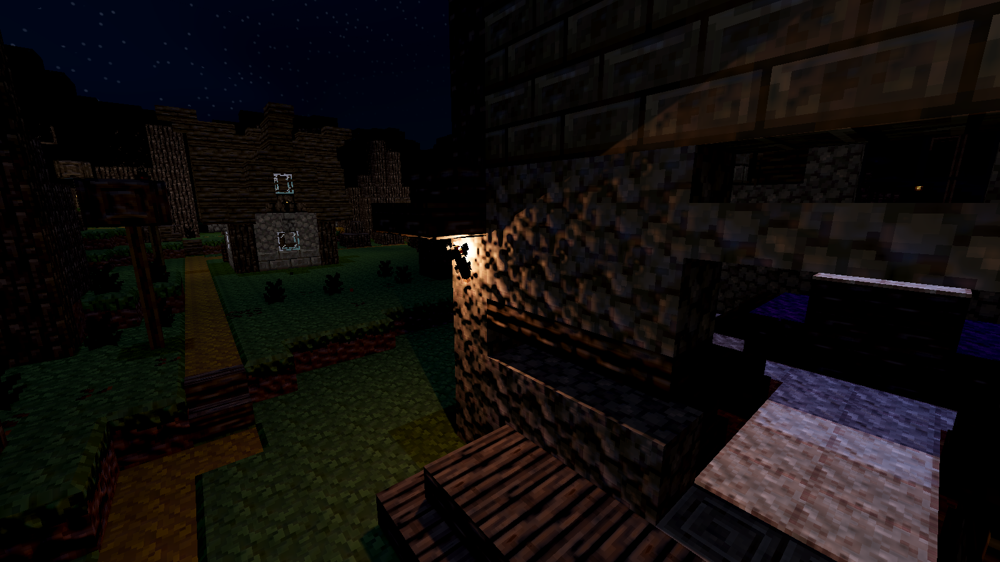
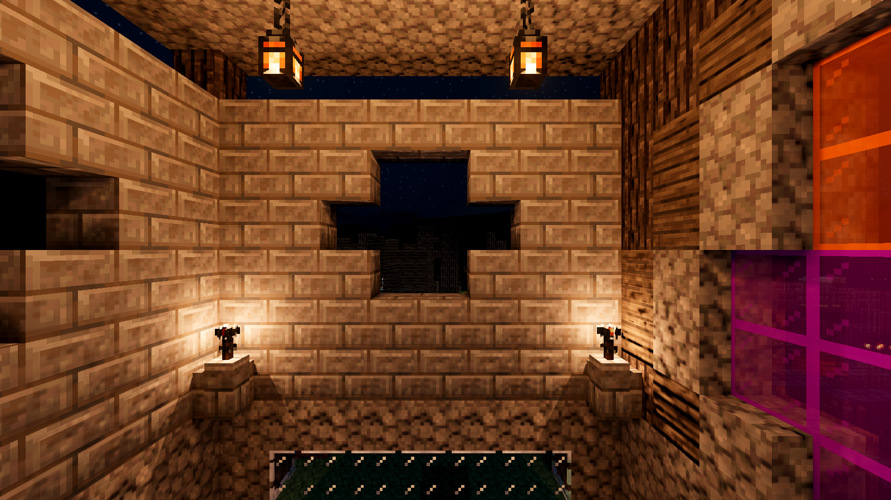
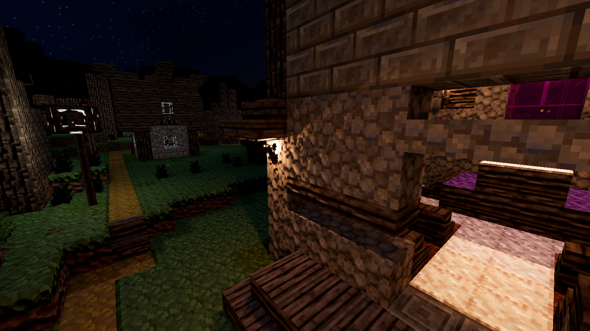
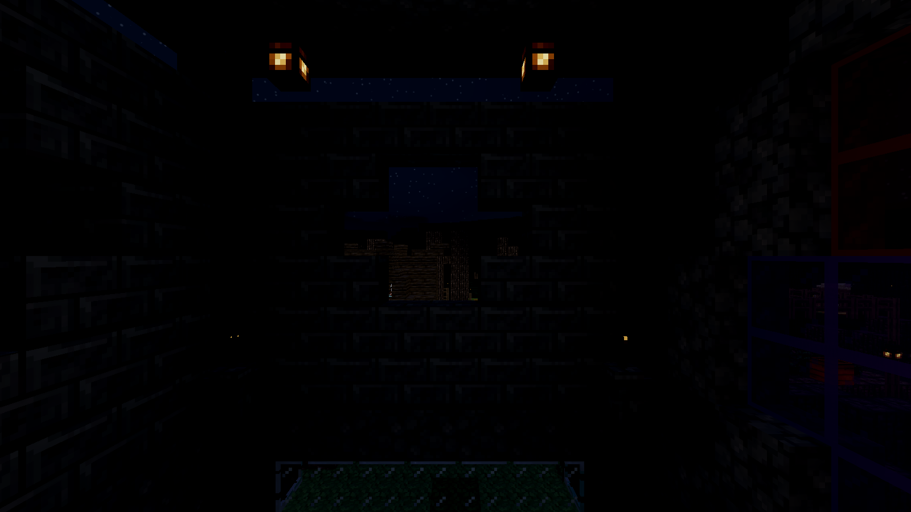
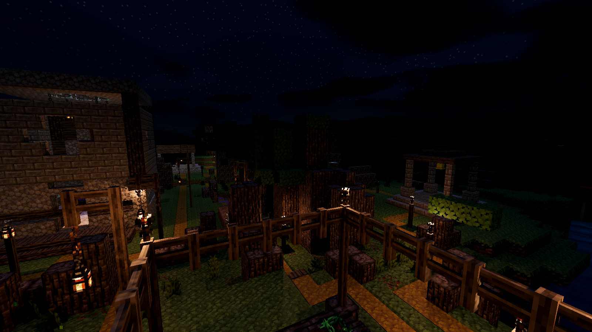

Confirmed lighting defects and their fixes. This is not a completed default-look overhaul. Findings, validation and remaining problems.
Only the exterior torch is active. The same lamp without a shadow map lights the inside of the wall. With a shadow map, that leaked light disappears. Camera, material and grade are fixed.

Same frozen camera and isolated torch. Toggle to inspect the overhang and ledge.

All admitted direct lamps have shadows. The wet-looking streaks are removed.

Normal scene lighting; the close hotspot remains strong.

Pooled lamps are hidden. The panels emit their own light; the dark housing is excluded by the mask.

Lighting diagnostic only. The 16-lamp budget changes simultaneous direct lighting. This is not a completed landscape comparison.
